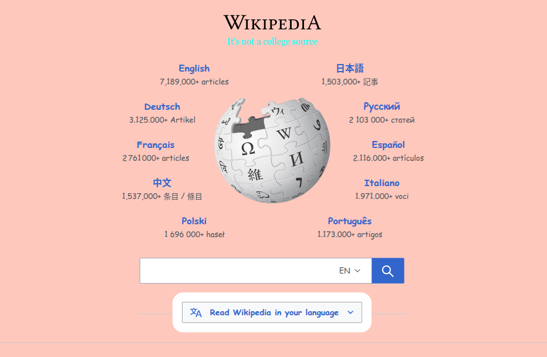

My Dev Tools Vandalism
I used browser developer tools to temporarily "vandalize" a website. Below is a screenshot showing my changes. These edits only appeared on my computer and did not affect the actual website.

What I "Vandalized"
I changed the subtitle under the main "Wikipedia" title, I couldn't figure out how to actualy change the Wikipedia part, and the CSS changes i made were the background color and text font. I think the font change makes the page look kind of funky, and any time you use a whimisical color like pink it's kind of silly. Also I poked fun at the common criticism of wikipedia that it's not a valid college source. As previously stated, I didn't understand why I changed the text in the elements panel for the title but it didn't change, but otherwise I was able to make my other changes perfectly. The changes I made were the simplest to do but also had the most obvious impact on the homepage, and messing around in the elements panel did help me get a better understanding how HTML and CSS interact with one another, and the instant visual changes were very helpful as well. In the end this exercise did help me get a better sense of how devtools are used to build webpages.